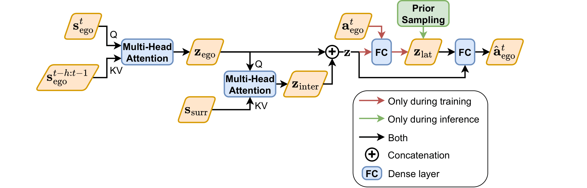

Supplementary material
Behavioural Quality Is Not Learning Utility: Objective Mismatch in Human Behaviour Models for Robot Learning
This page hosts the supplementary material referenced in our submission. It contains additional model details, experiment details, and results. The key formulations, architectures and calibrated parameters of the human behaviour models are summarised below; the complete derivations and all remaining details are in the supplementary PDF.
Highway driving models
Summary of Sec. II of supp.pdf. All models are trained or calibrated on the highD dataset and control the surrounding vehicles in highway-fast-v0.
Rule-based models
Car-following parameters are inferred with Automatic Differentiation Variational Inference (ADVI) under a hierarchical Bayesian model, so each vehicle $i$ gets its own parameter drawn from a population distribution. Positive parameters use a softplus link, $\theta_i = \log(1+e^{\theta_i^*})$ with $\theta_i^* \sim \mathcal{N}(\mu_\theta, \sigma_\theta^2)$, and observed speeds have Gaussian noise $v \sim \mathcal{N}(\mu_v, \sigma_{\text{obs}}^2)$. The tables report the posterior of the population-level hyperparameters $(\mu_\theta, \sigma_\theta)$ on the latent (pre-softplus) scale, so negative means are possible. 2,000 posterior samples are drawn for all downstream experiments.
MOBIL (lane changing)
A lane change is executed only if it is safe for the new follower and gives enough incentive:
Here $c$, $o$ and $n$ are the ego, old follower and new follower, and the tilde marks accelerations after the change. Lane changes are rare in highD (about 5,600 complete events), so MOBIL is not calibrated. Its parameters are sampled per vehicle around standard literature values:
- $p \sim |\mathcal{N}(0,\,0.25)|$
- $\Delta a_{\text{th}} \sim \mathcal{N}(0.1,\,0.05)$ m/s²
- $b_{\text{safe}} \sim \mathcal{N}(4,\,2)$ m/s²
Details: supp.pdf, Sec. II-A
Gipps' model
The $\min$ is not differentiable, so the data are split by distance headway (DHW). Samples with DHW < 25 m fit the safe margin $L$ through $v^{\text{safe}}$, and samples with DHW ≥ 25 m fit the desired speed $v^{\max}$ through $v^{\text{free}}$.
Fixed
- $a_n = 1.7$ m/s²
- $b_n = -3.4$ m/s²
- $b_{n-1} = -3$ m/s²
- $\tau = 0.6$ s
Priors
- $\mu_L \sim \mathcal{N}(2,1)$, $\sigma_L \sim \text{HN}(0.5)$
- $\mu_{v}^{\max} \sim \mathcal{N}(20,1)$, $\sigma_{v}^{\max} \sim \text{HN}(0.5)$
- $\sigma_{\text{obs}} \sim \text{HN}(1)$
- ADVI: 30k iters ($L$), 100k iters ($v^{\max}$)
| Parameter | Mean | SD | HDI 3% | HDI 97% |
|---|---|---|---|---|
| $\mu_L$ | 2.486 | 0.068 | 2.358 | 2.610 |
| $\sigma_L$ | 1.332 | 0.069 | 1.211 | 1.466 |
| $\sigma_{\text{obs}}$ ($L$ fit) | 1.466 | 0.021 | 1.430 | 1.508 |
| $\mu_v^{\max}$ | 32.336 | 0.216 | 31.926 | 32.734 |
| $\sigma_v^{\max}$ | 5.541 | 0.136 | 5.292 | 5.805 |
| $\sigma_{\text{obs}}$ ($v^{\max}$ fit) | 0.243 | 0.002 | 0.240 | 0.246 |
Details: supp.pdf, Sec. II-B (Tables I–II)
Krauß model
Here $d_n = x_{n-1}-x_n-l_{n-1}$, with no safe margin. Only the reaction time $\tau$ is inferred, from samples with DHW < 25 m. All other parameters are the same as for Gipps, except $b_n = 3.4$ m/s² (positive).
- $\mu_\tau \sim \mathcal{N}(0.8,\,0.3^2)$, $\sigma_\tau \sim \text{HN}(0.5)$
- ADVI: 20k iters
| Parameter | Mean | SD | HDI 3% | HDI 97% |
|---|---|---|---|---|
| $\mu_\tau$ | 0.087 | 0.051 | −0.006 | 0.184 |
| $\sigma_\tau$ | 1.341 | 0.045 | 1.256 | 1.423 |
| $\sigma_{\text{obs}}$ | 0.995 | 0.020 | 0.959 | 1.034 |
Details: supp.pdf, Sec. II-C (Table III)
Intelligent Driver Model (IDM)
IDM is a second-order model and fully differentiable, so every observation is used. Three parameters are inferred: desired speed $v^{\max}$, jam distance $d_0$ and safe time headway $T$.
Fixed
- $\delta = 4$
- $a_n = 0.73$ m/s²
- $b_n = 1.67$ m/s²
Priors
- $\mu_v^{\max} \sim \mathcal{N}(30,1)$, $\sigma_v^{\max} \sim \text{HN}(0.5)$
- $\mu_{d_0} \sim \mathcal{N}(2,1)$, $\sigma_{d_0} \sim \text{HN}(1)$
- $\mu_T \sim \mathcal{N}(1.5,\,0.5^2)$, $\sigma_T \sim \text{HN}(0.5)$
- ADVI: 15k iters
| Parameter | Mean | SD | HDI 3% | HDI 97% |
|---|---|---|---|---|
| $\mu_v^{\max}$ | 32.671 | 0.096 | 32.491 | 32.848 |
| $\sigma_v^{\max}$ | 1.249 | 0.085 | 1.102 | 1.408 |
| $\mu_{d_0}$ | 0.371 | 0.088 | 0.210 | 0.540 |
| $\sigma_{d_0}$ | 1.338 | 0.085 | 1.183 | 1.504 |
| $\mu_T$ | −0.812 | 0.086 | −0.979 | −0.664 |
| $\sigma_T$ | 1.258 | 0.084 | 1.110 | 1.427 |
| $\sigma_{\text{obs}}$ | 2.094 | 0.137 | 1.863 | 2.371 |
Details: supp.pdf, Sec. II-D (Table IV)
Unif and Unif-W (random baselines)
- Unif: $a^{\text{lon}} \sim U(-4,3)$, $a^{\text{lat}} \sim U(-2,2)$
- Unif-W: $a^{\text{lon}} \sim U(-4,3)$, $a^{\text{lat}} \sim U(-6,6)$
Details: supp.pdf, Sec. II-E
Data-driven models
All three are trained by behaviour cloning on highD state–action pairs. The data are downsampled from 25 to 5 fps and split 80/10/10, giving about 1.7M training samples. The 48-dimensional ego-centric state is $\mathbf{s} = [v_e^{\text{lon}}, v_e^{\text{lat}}, l_e, \delta y_e, \mathbb{1}_{\text{left}}, \mathbb{1}_{\text{right}}, s_p, s_{la}, s_{lp}, s_{lf}, s_{ra}, s_{rp}, s_{rf}]$. Each of the seven neighbours is encoded as $s_i = [\mathbb{1}_i, l_i, \Delta x_i, \Delta y_i, \Delta v_i^{\text{lon}}, \Delta v_i^{\text{lat}}]$ and set to zero if absent. The action is $\mathbf{a} = [a^{\text{lon}}, a^{\text{lat}}]$.
MLP
- 2 hidden layers × 64, ReLU
- batch 1024
- lr $10^{-3}$
- ≤100 epochs, patience 10
- test loss 0.62
Details: supp.pdf, Sec. II-F
Mixture density network (MDN)
$\bar{\mathbf{r}}$ is the batch-averaged component responsibility. The usage term discourages mode collapse, and the diversity term penalises overlapping components.
- $K = 15$ components
- 2 hidden layers × 128, ReLU
- $\lambda_{\text{usage}} = 0.05$
- $\lambda_{\text{div},e} = 0.01\,e^{-0.05e}$
- batch 512, lr $10^{-3}$
- test loss 1.88
Details: supp.pdf, Sec. II-G
Attention-based model (CVAE)

At inference $\mathbf{z}_{\text{lat}} \sim \mathcal{N}(0,I)$, which gives stochastic actions. The design is a simplified attention-based variant of Trajectron++, with attention in place of LSTMs and direct action prediction.
- history $h = 4$
- 4 heads, $d_z = 32$, dropout 0.1, LayerNorm + residual
- encoder 2-layer MLP (64), decoder 3-layer MLP (64)
- $d_{\text{lat}} = 16$, $\beta = 1$
- AdamW, lr $10^{-3}$, wd $10^{-4}$, batch 64, grad clip 1.0
- test loss 0.52
Details: supp.pdf, Sec. II-H (Fig. 1)
Validation against highD
| Model | Velocity | Rel. preceding vel. | Distance headway | Acceleration |
|---|---|---|---|---|
| Gipps | 0.024 | 0.510 | 0.214 | 0.148 |
| Krauß | 0.067 | 0.515 | 0.316 | 0.188 |
| IDM | 0.142 | 0.687 | 0.219 | 0.087 |
| MLP | 0.010 | 0.071 | 0.013 | 0.029 |
| MDN | 0.002 | 0.338 | 0.031 | 0.024 |
| Attention | 0.001 | 0.340 | 0.053 | 0.267 |
| Unif | 0.030 | 0.048 | 0.024 | 0.099 |
| Unif-W | 0.032 | 0.055 | 0.031 | 0.099 |
Feature distributions and summary statistics: supp.pdf, Sec. II-I
Highway scenario
Simulated trajectories from our calibrated human model in the highway setting.
Handover giver models
Summary of Sec. III of supp.pdf. Models generate the human giver's right-hand trajectory and are fitted to 1,281 preprocessed giver trajectories from handover@RPL.
Rule-based models
Minimum jerk
The model has no learnable parameters. The start position $\mathbf{p}_0$, end position $\mathbf{p}_T$ and duration $T$ are each sampled from Gaussians fitted to the human training data.
Details: supp.pdf, Sec. III-A
Elliptical model
Each trajectory is approximately planar: PCA variance along PC3 is significantly smaller than along PC1 and PC2 (RM-ANOVA, $F(2,1136)=6628.24$, $p_{\mathrm{GG}}\lt 0.001$). Each trajectory is therefore projected onto its PC1–PC2 plane, and an ellipse is fitted there by direct least squares (Fitzgibbon et al.):
- Duration is modelled with a univariate Gaussian; start/end points plus ellipse parameters with a multivariate Gaussian; principal axes plus 3-D plane offset with a separate multivariate Gaussian.
- Generation: sample the parameters, take the shortest elliptical arc between the projected endpoints, map it back to 3-D, retime it with the minimum-jerk profile $s(\tau)=10\tau^3-15\tau^4+6\tau^5$, then apply a linear endpoint correction.
Details: supp.pdf, Sec. III-B
Dynamic Movement Primitive (DMP)
A DMP is fitted to every demonstration (per dimension, by locally weighted regression). A Gaussian is then fitted over the weight vectors, $\mathbf{w}\sim\mathcal{N}(\boldsymbol{\mu}_w, \boldsymbol{\Sigma}_w)$. At generation time, $y_0$, $g$, $\tau$ and $\mathbf{w}$ are sampled and the system is Euler-integrated.
- $N = 20$ basis functions
- $K = 100$
- $D = 20$
- $\alpha_s = 4.6$
Details: supp.pdf, Sec. III-C
Data-driven models
Trajectories are downsampled to 20 Hz. The input is a sliding window of 5 frames ($T-4$ to $T$) of the standardised 3-D positions of the giver's and taker's right hands, $\mathbf{s}_T \in \mathbb{R}^{5\times 6}$. The target is the standardised 3-D displacement of the giver's hand from $T$ to $T+1$.
MLP
Same architecture and training as the highway MLP (2 × 64, ReLU, MSE). The input is flattened to $\mathbb{R}^{30}$ and the output is in $\mathbb{R}^{3}$.
Details: supp.pdf, Sec. III-D
MDN
Same architecture, loss and training as the highway MDN, but with $K = 5$ mixture components (down from 15) to match the lower behavioural complexity of the task.
Details: supp.pdf, Sec. III-E
Attention-based model
Details: supp.pdf, Sec. III-F
Validation against human data
| Model | End-to-end len. | Path len. | Avg. speed | Avg. accel. | Smoothness | Curvature |
|---|---|---|---|---|---|---|
| Min. jerk | 0.054 | 0.064 | 0.084 | 0.696 | 11.743 | 1.602 |
| Elliptical | 0.060 | 0.060 | 0.069 | 0.399 | 2.298 | 1.109 |
| DMP | 0.067 | 0.057 | 0.068 | 0.250 | 2.299 | 0.288 |
| MLP | 0.118 | 0.336 | 1.059 | 0.951 | 2.397 | 4.083 |
| MDN | 0.037 | 0.093 | 4.088 | 0.644 | 7.449 | 0.270 |
| Attention | 0.140 | 0.211 | 1.824 | 1.619 | 1.871 | 3.770 |
Feature distributions and summary statistics: supp.pdf, Sec. III-G
Handover scenario
Simulated trajectories from our calibrated human model in the handover setting.
Full supplementary PDF
Also covers dataset and environment details, trajectory generation, trajectory representations, evaluation metrics and RL training details.